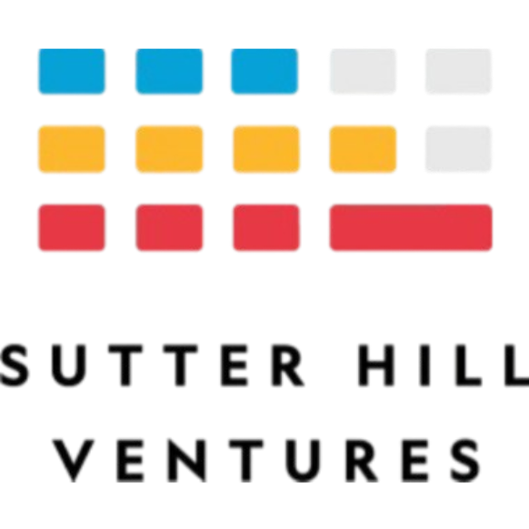

I'm a Master's student at the University of Washington, specializing in systems for machine
learning. In my undergrad I studied computer engineering, primarily focused on operating systems and
distributed systems (along
with a background in FPGA design), but
have since become more interested in the intersection of systems and ML inference.
It's worth noting that I'll be taking a year-long hiatus from my Masters to work at Sutter Hill Ventures
as a Codepoint Fellow, where I'll spend 6 months working in SHV labs with early-stage startups,
and then another 6 months at an image generation startup.
Outside of my academics, I was the president of the Software
Engineering Career Club at UW, where I led various on campus events and initiatives to help
students become better engineers (e.g. SWECC Labs). I also worked as a teaching assistant for CSE 492j, the Allen
School's technical interview prep course, where I got the chance to design and teach new curriculum
around system design.
Every once in a while I contribute to open source (mostly when tools break, or if I read an
interesting paper). In the past, this has included Ray, a distributed
computing framework, and mysql2, a MySQL client for Node.js. I also led the development of several
open
source projects for SWECC, all of which can be found on GitHub.
Experience

Incoming Codepoint Fellow
Sutter Hill Ventures
Aug 2025 - Aug 2026
Palo Alto, CA
Working with founders and early-stage startups at SHV Labs/product
development.
Incoming Software Engineering Intern
Meta
May 2025 - Aug 2025
Menlo Park, CA
ML models for ads ranking and fairness
Software Development Engineer Intern
Amazon Web Services - Firewall Manager
Sept 2024 - Dec 2024
Seattle, WA
Improving customer experiences with AWS service quotas.
Software Engineering Intern
DoorDash - Dasher Engagement Team
June 2024 - Sept 2024
Seattle, WA
Real-time systems for dasher engagement and retention.
Software Engineering Intern
StockCharts.com
June 2023 - Sept 2023
Redmond, WA
Enabling content creation partners to publish on StockCharts.com.
Technical Skills
Languages
Java
Python
C++
Kotlin
TypeScript
SQL
Bash
Tools
Linux
Git
Docker
Kubernetes
AWS
GitHub Actions
Domains
Distributed Systems
Operating Systems
Computer Networks
NLP
Education
M.S. in Computer Science and Engineering
University of Washington, Seattle, WA
Sept 2026 - June 2027
Focus: Systems for Machine Learning
Relevant Coursework: System Design, LLM Serving Systems
B.S. in Computer Engineering
University of Washington, Seattle, WA
GPA: 3.96
Sept 2021 - June 2025
Focus: Distributed Systems
Relevant Coursework: Distributed Systems, Operating Systems, Computer
Networks, Systems Programming, Database Systems, Data Structures & Algorithms, Advanced
Algorithms, Security, System Design, Natural Language Processing